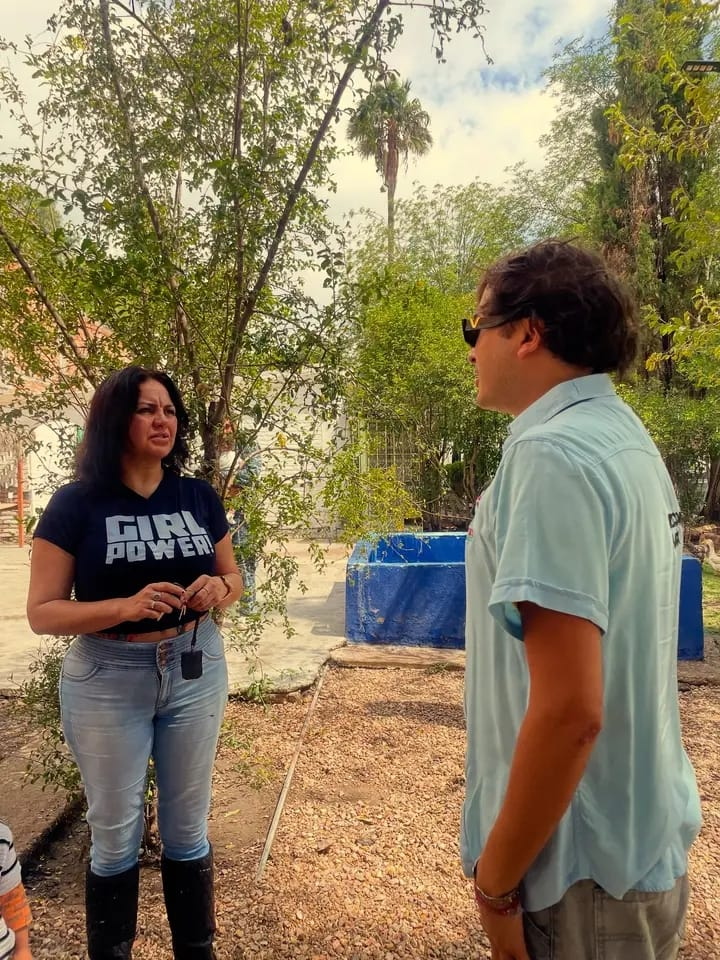
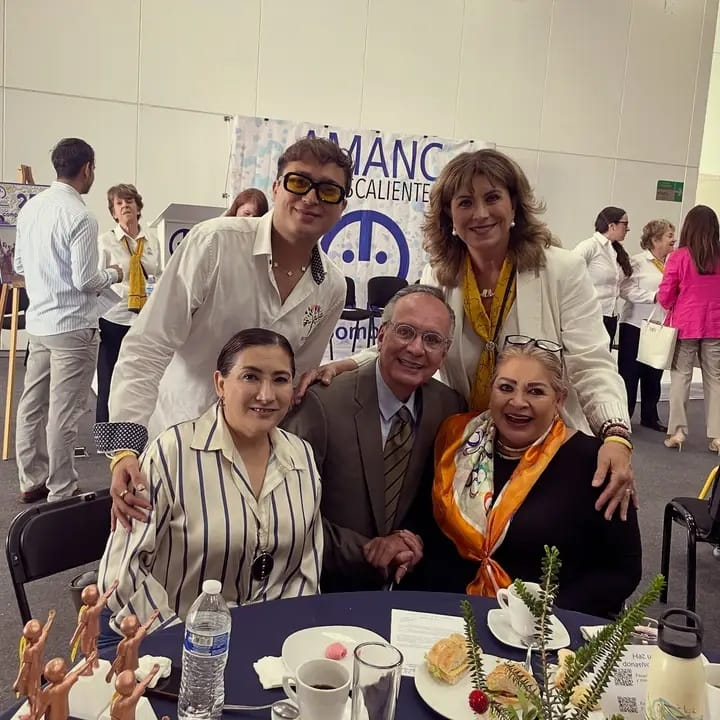

En Fundación Huerta nuestra misión es apoyar y acompañar a las personas y familias en situación de vulnerabilidad, garantizando que tengan acceso a los recursos, información y oportunidades necesarias para mejorar su calidad de vida. Creemos que toda persona merece vivir con dignidad, salud y seguridad, y por eso trabajamos directamente con las comunidades, creando programas, campañas y brigadas que generen un impacto real y tangible.
Nuestra labor se centra en tres pilares fundamentales: salud, educación y apoyo social. A través de brigadas médicas, pruebas rápidas de VIH y hepatitis C, y actividades de prevención y educación sobre salud sexual, buscamos proteger y promover la salud de cada individuo, asegurando que la información llegue de manera clara, confiable y accesible. Sabemos que la prevención es la mejor herramienta para empoderar a las personas y a las familias, por lo que cada acción que realizamos está diseñada para brindar conocimiento práctico, orientación y acompañamiento cercano.
Pero nuestro trabajo no se limita únicamente a la salud. Fundación Huerta también realiza acciones de apoyo social y comunitario, proporcionando materiales básicos como láminas para viviendas, ropa, víveres y otros recursos esenciales. Creemos que atender las necesidades más inmediatas es un paso fundamental para que las familias puedan fortalecer su estabilidad y bienestar, y que cada aporte tenga un efecto positivo duradero en sus vidas.
Creemos en la importancia de ayudar sin esperar nada a cambio, acompañando a cada persona con empatía, respeto y humanidad. Cada acción, por pequeña que parezca, tiene el poder de transformar vidas y fortalecer comunidades.
Cada recurso, donación o apoyo se maneja con claridad y responsabilidad. Queremos que nuestros beneficiarios, colaboradores y donadores sepan exactamente cómo se utilizan los recursos y cómo se traduce cada acción en beneficios concretos.
Nos entregamos de manera constante y dedicada a nuestras actividades, asegurando que los programas tengan un impacto medible y real. Sabemos que el compromiso a largo plazo es lo que permite construir un cambio verdadero.
Cada persona es única y merece ser tratada con dignidad. Respetamos la privacidad y la sensibilidad de quienes atendemos, asegurando que nuestros programas se desarrollen siempre de manera ética y cuidadosa.
No solo buscamos atender necesidades inmediatas, sino también brindar herramientas y conocimientos que permitan a las comunidades y a las familias ser autónomas y tomar decisiones informadas para mejorar su calidad de vida.
Cada acción de Fundación Huerta busca generar un efecto tangible y positivo en la vida de las personas. Desde la atención médica directa hasta la entrega de recursos esenciales, nuestro objetivo es fortalecer la salud, el bienestar y la dignidad de cada familia y comunidad. Sabemos que cada sonrisa, cada prueba realizada y cada lámina entregada representa un cambio real en la vida de alguien.
Más allá de las actividades, nuestra misión es construir comunidades solidarias y conscientes, donde las personas se sientan acompañadas, escuchadas y valoradas. Queremos que quienes se acerquen a la fundación no solo reciban apoyo, sino también herramientas para mejorar sus vidas, aprender, prevenir riesgos y generar un entorno más seguro y saludable.
En Fundación Huerta creemos que las pequeñas acciones pueden generar grandes cambios. Cada brigada, cada donación y cada campaña es un paso hacia un mundo más justo y solidario. Nos esforzamos por combinar la acción directa, la educación y la prevención, creando programas que no solo atiendan necesidades inmediatas, sino que también empoderen a las comunidades para que sean protagonistas de su propio bienestar.
Nuestra misión es clara: transformar vidas con compromiso, solidaridad y respeto, generando un impacto positivo que se vea reflejado en cada persona, familia y comunidad con la que trabajamos. Cada proyecto, cada actividad y cada esfuerzo está guiado por este propósito, y cada día buscamos nuevas formas de hacer que la ayuda llegue más lejos y sea más efectiva.